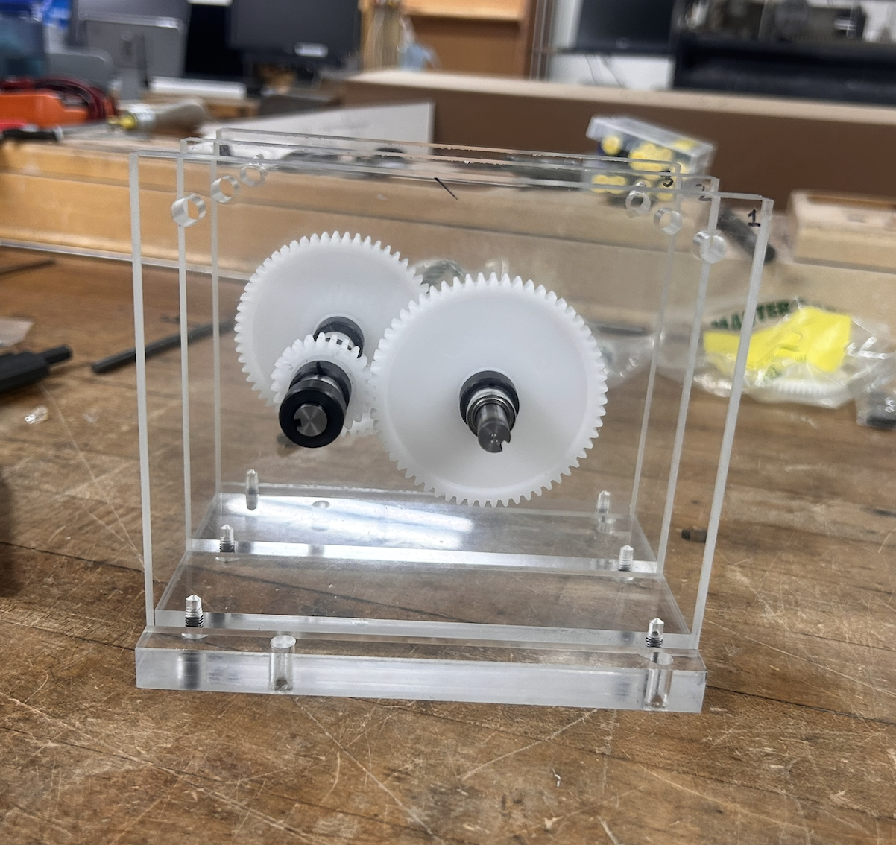
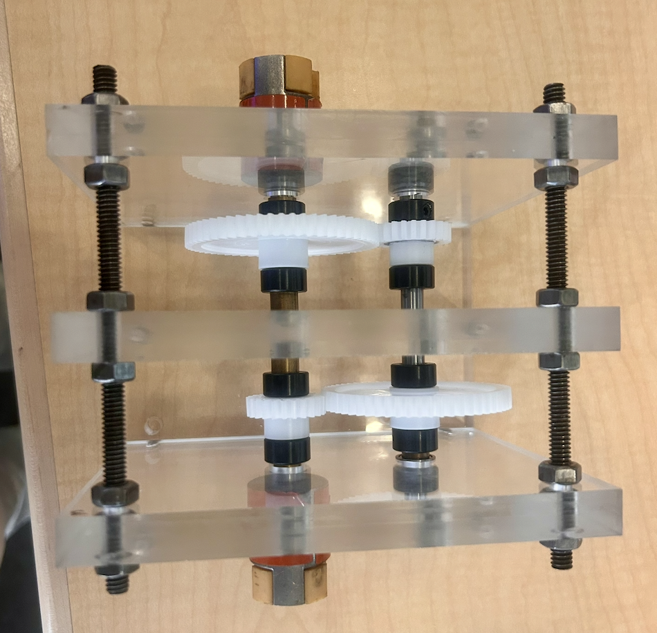
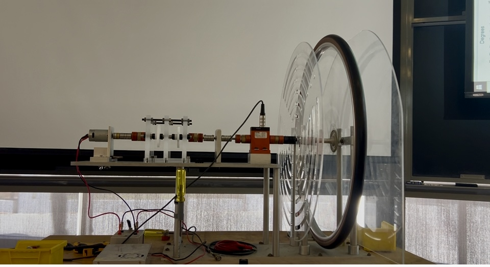

Transmission



This project involved designing and building a custom mechanical transmission to couple a DC motor to a bicycle wheel. The design process involved finding balance between performance, manufacturability, and cost.
We designed a compound gear with a 6.25 gear ratio and successfully achieved efficient motion using precision-aligned shafts, high grade bearings, and custom machined brass spacers.
Our final system outperformed the predicted efficiency benchmarks in testing with high acceleration.
The different phases of this project involved:
- Research and material selection
- Main obstacle in this phase of the process was selecting materials that remained within the budget
- CAD design
- SolidWorks was used to create a digital design of the transmission
- Design process took into account performance, manufacturability, and cost
- Assembly
- Assembly and manufactory involved milling the acrylic walls, cutting the shafts with the lathe, and precise alignment.
- Testing: To measure the efficiency and output of the transmission, the following parameters were tested:
- Maximum rotational speed of the wheel
- Time required for the wheel to reach 250 rpm
- Peak torque
Throughout the project, we participated in both a Preliminary Design Review (PDR) and a Critical Deign Review (CDR), using the feedback to refine our CAD model, materials selection, and assembly strategy.